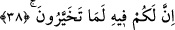

Âyette geçen “tedrusûn” kelimesi: Müfredat’ta açıklandığına göre “derese’ş-şey’u”
ifâdesi “herhangi bir şeyin iz ve eseri kaldı” mânâsınadır. “
” “bilginin iz ve
eserini, ezberleyerek aldım” demektir. İlmin eserinin alınması onu okumaya devam
etmekle sağlandığı için, “sürekli okuma” fiili âyette “ders” kelimesiyle ifâde
olunmuştur.
38. Onda, beğendiğiniz her şey sizin için mutlaka vardır (diye mi yazılı)?
“Beğenmek” şeklinde tercüme edilen “tahayyerûn” fiili Arapçada “tahayyuru’ş-şey’i
ve ihtiyâruhu” sözü, “herhangi bir şeyin en iyisini almak” demektir.
Râğıb İsfahânî’nin açıklamasına göre âyette geçen fiilden türeyen “ihtıyar” kelimesi,
“yapılması hayırlı olan şeyi talep etmek” demektir. Bazen -özünde hayırlı olmasa bile-
insanın kendine göre hayırlı gördüğü şeyi seçmesine de “ihtiyâr” denir.
Bu açıklamaların ışığı altında âyet-i kerîmenin mânâsı şöyle olur: “O kitapta hayırlı
gördüğünüz ve arzuladığınız her şey mutlaka vardır diye mi yazılı?” Âyette yer alan
“inne”nin aslı “enne”dir. Çünkü kâfirlerin okuduklarının sorulduğu şey, bu elif ve nûn
ile başlayan cümledir. Şu hâlde burası dilbilgisi kuralları açısından, müfred mahallinde
gelmiş cümle hâlindeki mef’ûldür. Cümle mef’ûl olduğuna göre böyle bir cümlenin
başındaki elif ve nun esreli okunmaz. Ancak elif ve nun, lâm ile getirildiğinde esre
okunur. Çünkü lâmu’l-ibtida “enne” ve cümlesinin başına gelmez. Dolayısıyla burada
yer alan lâm, ibtida lâmı olup “inne”nin ismi üzerine dâhil olmuştur.
Bu îzâh dikkate alınarak âyet-i kerîmeye anlam vermek gerekirse şöyle söylenebilir:
Yoksa size âid bir kitap var da bu bâtıl inanışları onda mı okuyorsunuz? Bu kitapta;
“canınızın istediği sizin olacaktır, isyankâr tıpkı Allah’a itâat eden gibi olacaktır, hattâ
ondan daha da iyi olacaktır diye mi” yazıyor? O hâlde eğer siz söylediğiniz sözlerde
doğru kişiler iseniz bu kitabı getirin bakalım.
Burada okunan şeyin “sonradan gelenler içinde ona iyi bir nam bıraktık, bütün
âlemlerden Nûh’a selam olsun” (es-Saffat, 37/78-79) âyetinde olduğu gibi bunun
hikâye şeklinde olması mümkündür. Eğer böyle olursa, elif ve nûn’un esre okunduğu
yerlerden birisiyle karşı karşıyayız demektir. Çünkü bu takdirde elif ve nûn müfred
makamında gelmemiş, aksine Allah o cümleyi olduğu şekilde bizlere hikâye etmiştir.
Bu iki açıklama arasındaki farka gelince; birinci açıklama, kâfirler tarafından
okunmuş olduğu sorulan şey, Allah’ın hitâb ettiği kimselere nispet ettiği cümledir. İkinci
açıklama, sözcükleri ile birlikte Allah’ın hikâye ettiği cümledir.
“Onda” şeklinde tercüme ettiğimiz “fîhi” sözcüğüne gelince; birinci açıklama
biçiminde bu “fîhi” kelimesi olmadan cümle olamaz. Çünkü herhangi bir yazar, kitabına,
insanları onu okumaya teşvik maksadıyla “bu kitap şöyle şöyledir” şeklinde yazacaktır.